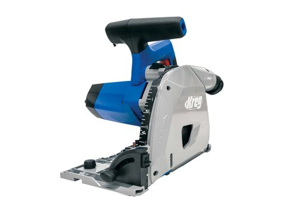

FEATURED DEAL
Woodcraft · 57% off
Kreg Adaptive Cutting System (ACS) Plunge-Cut Track Saw
A corded plunge-cut track saw with a fully shrouded blade, retractable riving knife, built-in anti-kickback features and a blade-left layout so right-handers can see the line. It bevels from −1° to 47° and cuts up to 2-1/8″ deep. It breaks down plywood and straightens rough board edges without wrestling full sheets onto a table saw. At 57% off it costs less than many circular saws. It needs the Kreg 62″ ACS guide track, which is also on sale below.
SHOP PRICE: $148.98
WAS: $349.99